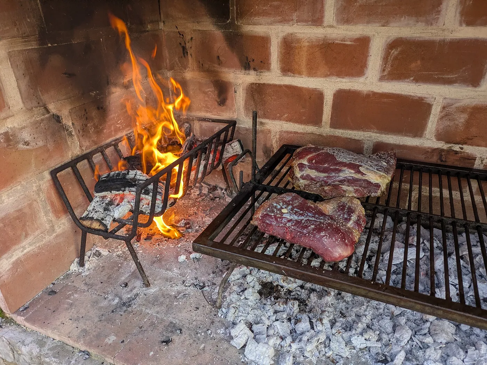
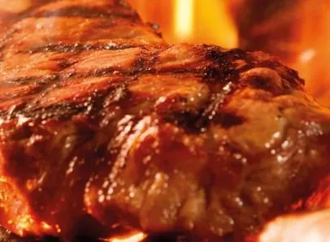
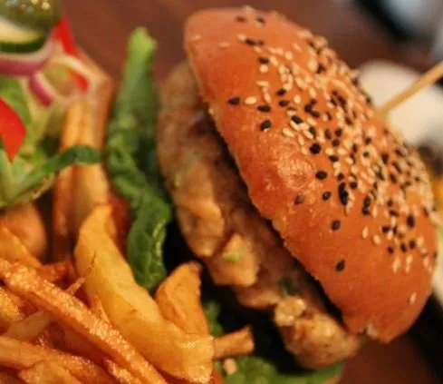

En plena naturaleza
Un restaurante asador rodeado de montaña, a solo cinco minutos de Jaca.
Restaurante Asador Pirineo Aragonés Desde 2018
Carnes a la brasa y cocina de montaña en una borda de piedra, a los pies de la Peña Oroel y a solo cinco minutos de Jaca.
I. La casa
Situados a las afueras de Jaca, en plena falda del Monte Oroel, en un pequeño pueblo llamado Ulle. Nuestro asador se levanta sobre los cimientos de una borda antigua reformada: un bonito lugar para comer al estilo aragonés y vasco mientras el paisaje hace el resto.
Somos el único restaurante a cinco minutos de Jaca donde la sensación es de pura paz y tranquilidad. Aquí la decoración y el sabor se entremezclan para transmitir al comensal una sensación embriagadora en todos sus sentidos: la piedra, la madera, el olor de la brasa y la Peña Oroel al fondo.
En 2018 decidimos abrir este negocio familiar con un firme propósito: hacer llegar a quien se sienta a nuestra mesa ese aire que ofrece nuestra localización y nuestro servicio. Quien pasa por Borda Chaca se marcha hablando del paisaje… y de cómo le atendimos.


Lo que nos define
Un restaurante asador rodeado de montaña, a solo cinco minutos de Jaca.
Los mejores menús y raciones a las afueras de Jaca, con producto de verdad.
Carnes y menús a la brasa, con el tiempo y el cuidado que pide el fuego.
Un servicio agradable en un lugar tranquilo que transmite paz y calma.
II. La cocina
Cocina aragonesa y cocina vasca con nuestros menús a la brasa y otras exquisiteces: un buen bacalao, sidra, tortillas, chuletón de vaca vieja, cordero… Recetas de montaña hechas sin prisa.





Si tu idea es pasar una grata velada, la brasa ya está encendida y la Peña Oroel, en su sitio.Borda Chaca · Ulle
Galería
Toda persona que pasa por nuestro asador queda maravillada por el magnífico paisaje que nos rodea. Un adelanto de lo que te espera.
IV. Comedores y celebraciones
Si tu idea es pasar una grata velada u organizar un evento, no pierdas la oportunidad de visitarnos.
El comedor interior, entre muros de piedra y el calor de la casa.
Al aire de la montaña, con vistas a la majestuosa Peña Oroel.
Ofrecemos varios menús y, si se organiza con antelación, también podemos personalizar los platos y menús. Nuestro interés es ofrecer el mejor servicio a nuestros comensales.
Consultar tu evento
V. Reconocimiento
La Guía Repsol nos concedió un Solete, el distintivo que reconoce «lugares bonitos con algo especial que te hace volver».
Lo otorga un jurado de expertos culinarios de todo el país a establecimientos que, sin ser alta cocina, hacen que sus clientes sientan que están en un lugar especial. Así nos lo contaron algunos medios:
VI. Cómo llegar
Al final de la recta de la Pista de Hielo, en la glorieta que lleva a Huesca, toma el cruce hacia Barós. Unos 500 metros antes de llegar al pueblo, coge el desvío a la izquierda y sigue la carretera hasta Ulle. Nos encontrarás nada más entrar, a la izquierda, en la bajada al pueblo.
No es necesario llegar hasta Jaca. Toma el cruce de Navasa y, al llegar al pueblo, desvíate a la derecha y continúa recto hasta Ulle.
El mapa se carga desde Google Maps. Al activarlo, Google puede usar cookies.
VII. Reservas
Reserva por teléfono y prepárate para lo mejor de nuestra gastronomía y de nuestro equipo. Por la noche es necesario reservar mesa.
664 196 232| Lunes | 13:00–16:00 · 20:00–22:30 |
|---|---|
| Martes | 13:00–16:00 · 20:00–22:30 |
| Miércoles | 13:00–16:00 · 20:00–22:30 |
| Jueves | 13:00–16:00 · 20:00–22:30 |
| Viernes | 13:00–15:30 · 20:00–22:30 |
| Sábado | 13:00–15:30 · 20:00–22:30 |
| Domingo | 13:00–16:00 · 20:00–22:30 |
Cenas según reserva.
Abrimos también vísperas de festivos, festivos, puentes y Navidades. Por la noche es necesario reservar mesa.